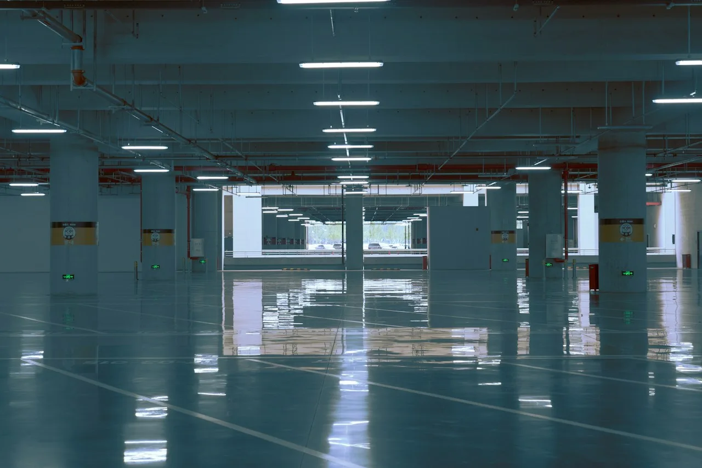

صورة توضيحية — Photo by Lance Chang on Unsplash
اكتشف روعة منزلك مع معلم ايبوكسي الرياض 053 116 9312
هل تتخيل أرضية تمنح المكان مظهرا عصريا مختلفا من أول نظرة؟ أصبح معلم ايبوكسي الرياض من العبارات التي يبحث عنها أصحاب المنازل والمنشآت الراغبون في تجديد الأرضيات بتشطيبات حديثة، لكن جمال النتيجة لا يتوقف على اللون واللمعان فقط، بل يعتمد على اختيار النظام المناسب وتجهيز السطح بطريقة صحيحة.
سواء كنت تخطط لتجديد مساحة داخلية أو تبحث عن أرضية تناسب استخداما تجاريا أو صناعيا، فمن المهم أن تعرف الفرق بين أنواع الإيبوكسي وتفاصيل تكلفتها قبل اتخاذ القرار، كما أن تنسيق الأرضيات مع الجدران والأسقف يساعد على إبراز جمال المساحة، ويجعل التجديد أكثر انسجاما مع التصميم العام للمكان.
عند البحث عن «ايبوكسي ارضيات جوتن»، قارن مواصفات الخامات ونطاق العمل ونماذج التنفيذ قبل الاتفاق على المشروع.
معلم ايبوكسي الرياض: أرضية جديدة تغير شكل المكان
تخيل أن تدخل إلى منزلك أو معرضك فتجد الأرضية متناسقة مع الألوان والإضاءة وسهلة التنظيف ومناسبة لطبيعة الاستخدام، هذه النتيجة تبدأ باختيار أفضل معلم ايبوكسي الرياض ونظام إيبوكسي مناسب، وليس بمجرد شراء المادة أو اختيار لون جذاب:
- حدد طبيعة المكان: تختلف متطلبات أرضية المنزل عن المستودع أو الورشة، لذلك يجب اختيار النظام وفقا لمستوى الحركة والأحمال والظروف التي ستتعرض لها الأرضية.
- اختر المظهر الذي يناسبك: تتوفر تشطيبات سادة وأخرى زخرفية، ويمكن تحديد اللون ودرجة اللمعان بما يتناسب مع تصميم المكان والأثاث المحيط به.
- اهتم بحالة السطح: فحص الأرضية قبل التنفيذ يساعد على اكتشاف الشروخ أو الرطوبة أو الأجزاء غير الثابتة التي قد تؤثر في التصاق المادة.
- اسأل عن خطوات العمل: اطلب شرحا واضحا لمراحل التنظيف والتجهيز والتطبيق والتجفيف، حتى تعرف ما يتضمنه التنفيذ وما تحتاج إليه الأرضية قبل البدء.
- لا تجعل السعر وحده معيارك: قارن نوع المادة وسماكة الطبقات والأعمال المشمولة في العرض، لأن الأسعار المنخفضة قد لا تشمل جميع مراحل التجهيز المطلوبة.
معلم ايبوكسي ارضيات وأنواعه
ليس كل معلم ايبوكسي الرياض مناسب وليس كل مادة مناسبة لكل مكان فبعض الأنظمة مصممة للتشطيبات البسيطة، بينما تحتاج المساحات الصناعية إلى خصائص مختلفة، ولهذا فإن معرفة الخيارات المتاحة تساعدك على تحديد ما يستحق الاستثمار فيه:
- الإيبوكسي السادة: خيار لمن يفضل مظهرا بسيطا ومتجانسا، ويمكن اختيار درجة لونية تتوافق مع طبيعة المساحة والتصميم المحيط بها.
- الإيبوكسي ذاتي التسوية: يستخدم للحصول على سطح متجانس عند تطبيقه وفق مواصفات النظام وتجهيز الأرضية بالطريقة الصحيحة.
- الإيبوكسي الزخرفي: يمنح مساحة المكان تأثيرا بصريا مميزا، وتختلف تكلفته حسب التصميم والمواد والتفاصيل المطلوبة.
- الإيبوكسي المقاوم للانزلاق: يمكن استخدام أنظمة ذات خصائص محسنة للاحتكاك في الأماكن التي تتطلب ذلك، مع اختيار التشطيب وفقا لظروف الاستخدام.
- الإيبوكسي الصناعي: قد يكون مناسبا للمصانع والمستودعات وبعض بيئات العمل، بشرط اختيار نظام يتحمل الأحمال والتعرضات المتوقعة في الموقع.
اقرأ أيضًا: ألواح بديل الرخام للجدران.
إيبوكسي ارضيات جوتن: كيف تختار المنتج المناسب؟
إذا كنت تبحث عن معلم ايبوكسي الرياض، فلا تبدأ بالسعر أو اللون وحدهما، بل تحقق أولا من اسم المنتج ومواصفاته والاستخدامات التي توصي بها الشركة المصنعة، لأن ملاءمة المادة تعتمد على طبيعة السطح وظروف التطبيق:
- تأكد من اسم المنتج: اطلب الاسم الكامل ورقم المنتج إن توفر، حتى تستطيع مراجعة بياناته الفنية بدقة.
- راجع الاستخدام الموصى به: تحقق مما إذا كان المنتج مخصصا للأرضيات ونوع البيئة التي سيستخدم فيها، ولا تفترض أن جميع منتجات العلامة التجارية تؤدي الوظيفة نفسها.
- افهم طريقة التجهيز: بعض الأنظمة تتطلب تحضيرا خاصا للسطح أو طبقة تأسيس، ولذلك يجب اتباع تعليمات المنتج وعدم تجاوز المراحل اللازمة.
- اسأل عن السماكة المطلوبة: تختلف متطلبات التطبيق حسب نوع النظام والاستخدام، وينبغي تحديدها وفقا للمواصفات الفنية للمادة.
- قارن التكلفة بالمواصفات: عند مقارنة منتج بآخر، ضع في الاعتبار كمية التغطية وعدد الطبقات وتجهيز السطح، وليس سعر العبوة وحده.
تعرف على: معلم بديل الرخام الرياض.
كم يكلف تنفيذ أرضية إيبوكسي في الرياض؟
السعر من أكثر الأمور التي تشغل العميل قبل بدء المشروع، لكن تكلفة الأرضية لا تتحدد برقم واحد يناسب الجميع، بل تتغير بحسب نوع الإيبوكسي ومساحة المكان وحالة السطح ومستوى التشطيب المطلوب، وتعرض صفحات منافسين في الرياض نطاقات سعرية مختلفة تبعا لهذه العوامل:
- نوع النظام: تختلف تكلفة الطلاء البسيط عن الأنظمة ذات السماكات الأعلى أو التشطيبات الزخرفية المتخصصة.
- المساحة الإجمالية: تؤثر مساحة المشروع في كمية المواد وحجم العمل، وقد تختلف تكلفة المتر بين مشروع صغير وآخر واسع.
- تجهيز الأرضية: قد تحتاج الأرضية إلى صنفرة أو تنظيف عميق أو معالجة شروخ قبل التطبيق، ما يضيف إلى التكلفة الإجمالية.
- الخامات المستخدمة: تؤثر مواصفات المنتج ومعدل استهلاكه وعدد الطبقات المطلوبة في تكلفة المواد.
- تفاصيل عرض السعر: يجب معرفة ما إذا كان العرض يشمل المواد والعمالة وتجهيز السطح والطبقات النهائية، أو أن بعض البنود تحسب بصورة منفصلة.
شاهد الآن: معلم ديكورات جبس بورد | 0531169312 لخدمات بلمسة عصرية
هل يمكن تركيب الإيبوكسي فوق البلاط الموجود؟
قد يكون تطبيق الإيبوكسي فوق البلاط ممكنا في بعض الحالات وهو خيار يثير اهتمام من يرغب في تجديد الأرضية دون إزالة السيراميك، لكن نجاحه يعتمد على اختيار أفضل معلم ايبوكسي الرياض وحالة البلاط ومدى ثباته ونوع النظام المستخدم، لذلك يجب فحص السطح قبل اتخاذ القرار:
- افحص ثبات البلاط: البلاط المفكك أو المتشقق قد يحتاج إلى معالجة قبل التفكير في تغطيته بطبقة جديدة.
- تحقق من نظافة السطح: يجب التخلص من الدهون والأوساخ والملوثات التي قد تمنع الالتصاق الجيد.
- عالج الفواصل والعيوب: يحدد المختص طريقة التعامل مع الفواصل والشروخ بحسب حالة الأرضية ومتطلبات المنتج.
- تأكد من توافق المادة: يجب أن تسمح المواصفات الفنية للنظام بالتطبيق فوق البلاط بعد التجهيز المناسب.
- لا تتجاهل الرطوبة: وجود الرطوبة أو مشكلات أسفل البلاط قد يؤثر في النتيجة، ولهذا ينبغي التحقق منها قبل بدء العمل.
إذا كانت أرضيتك الحالية من السيراميك، فاطلب تقييما لحالتها قبل شراء المواد من خلال معلم ايبوكسي الرياض، لأن تغطية البلاط ليست حلا مناسبا في جميع الحالات، وقد يكون إصلاح أجزاء معينة أو إزالة البلاط المتضرر ضروريا للحصول على نتيجة أفضل.
كيف تنسق الأرضية الجديدة مع ديكور المكان
قد تكون الأرضية هي العنصر الذي يغير انطباعك عن الغرفة بالكامل، لكن النتيجة الأكثر جمالا تتحقق عندما تتناغم مع الجدران والأسقف والإضاءة، ولذلك من المفيد وضع تصور متكامل قبل اختيار اللون والتشطيب بمساعدة الفني المختص:
- اربط اللون بالأثاث: اختر درجة تكمل الأثاث الموجود بدلا من اختيار لون منفصل عن بقية عناصر الغرفة.
- وازن بين الخامات: يمكن أن ينسجم مظهر الأرضية مع الجدران المزينة بورق الجدران أو التكسيات الخشبية بحسب طبيعة التصميم.
- راع الإضاءة: قد يتغير مظهر اللون بين ضوء النهار والإضاءة الداخلية، لذا من الأفضل تقييم العينات في ظروف قريبة من الاستخدام الفعلي.
- حدد نقطة التركيز: إذا كانت الأرضية ذات تأثير زخرفي قوي، فمن الأفضل أن تكون بقية العناصر أكثر هدوءا حتى لا يبدو المكان مزدحما.
- فكر في الصيانة: اختر التشطيب وفقا لسهولة تنظيفه والعناية به، مع الالتزام بتعليمات الشركة المصنعة للمادة.
الخاتمة
الأرضية الجميلة ليست مجرد لون جديد، بل اختيار يجمع بين ملاءمة المادة وطريقة التجهيز والتشطيب المناسب لطبيعة المكان، ولهذا فإن البحث عن الفني المختص ينبغي أن يبدأ بتحديد احتياجاتك ومراجعة مواصفات النظام والتكلفة الفعلية قبل التنفيذ
وإذا كنت تخطط لتجديد منزلك من الداخل، فلا تغفل دور الجدران والأسقف والخامات في إبراز جمال الأرضية.
الأسئلة الشائعة
كم سعر متر الإيبوكسي للأرضيات؟
يختلف سعر متر الإيبوكسي حسب نوع النظام وسماكة الطبقات ومساحة المشروع وحالة الأرضية والأعمال المطلوبة قبل التطبيق، كما تختلف الأسعار إذا كانت المواد مشمولة في العرض أو كانت أجور التنفيذ منفصلة.
هل يمكن وضع الإيبوكسي على البلاط؟
يمكن تطبيق بعض أنظمة الإيبوكسي فوق البلاط إذا كان ثابتا وسليما وتم تجهيزه بالطريقة المناسبة، لكن ذلك يتوقف على حالة الأرضية وتعليمات المنتج المستخدم ونصائح الفني المختص.
ما أفضل نوع إيبوكسي للأرضيات؟
يعتمد النوع الأنسب على طبيعة المكان والغرض من الأرضية، فالمساحات السكنية قد تحتاج إلى تشطيب مختلف عن المستودعات أو الورش التي تتعرض لأحمال واحتكاك أكبر، لذلك ينبغي تحديد الاستخدام المتوقع ومراجعة المواصفات الفنية للمنتج واختيار النظام الذي يلائم ظروف الموقع بدلا من الاعتماد على الاسم أو الشكل وحدهما.
هل يمكن استخدام إيبوكسي جوتن لجميع الأرضيات؟
لا ينبغي افتراض أن منتج واحد يناسب جميع أنواع الأرضيات، لأن منتجات الإيبوكسي تختلف في خصائصها والاستخدامات الموصى بها لها، لهذا قبل الشراء تأكد من اسم المنتج ومواصفاته الفنية والأسطح التي يمكن تطبيقه عليها والتزم بتعليمات الشركة المصنعة بشأن التجهيز وطريقة التنفيذ وظروف التجفيف.
هل تبحث عن تنفيذ احترافي لمشروعك؟
نحن في ديكورات الأحلام نوفر لك أفضل الخامات وأمهر الفنيين في الرياض.
تواصل معنا عبر واتساب